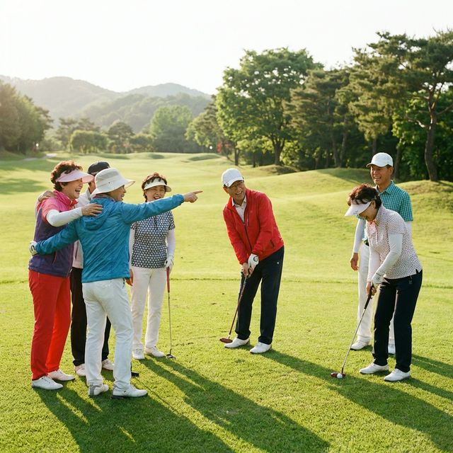
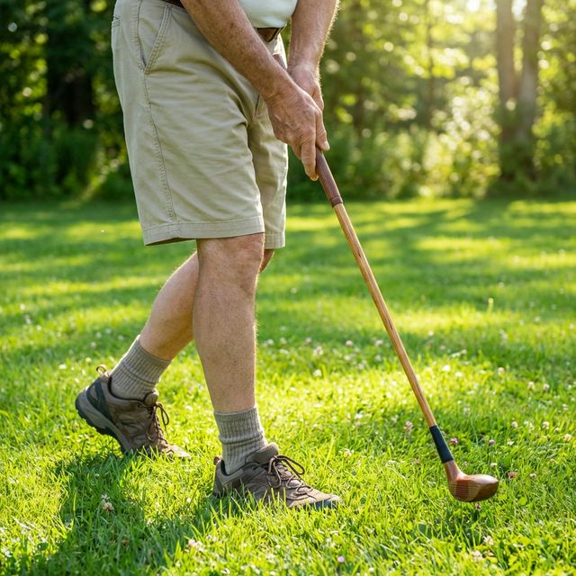
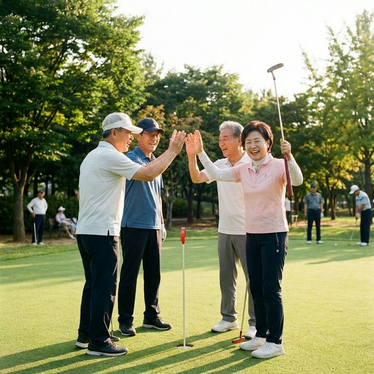

어르신들, 대표님들 안녕하시지요? 🙇♂️ 최근 은퇴하신 지인분들 만나면 다들 어디 가시는지 아십니까? 주말마다 꽉 막히는 등산로? 아닙니다. 동네 뒷산에 지팡이 짚고 오르시는 분들보다 훨씬 젊게 사시는 분들은 지금 전부 '파크골프장'에 계십니다. 🌳
왜 의사 선생님들조차 60대 이상 시니어들에게 무리한 등산을 말리고 파크골프를 입 아프게 추천하시는지, 그 기가 막힌 이유를 지금부터 하나하나 짚어드리겠습니다.

나이 들면 제일 걱정되는 게 뭘까요? 맞습니다. 바로 무릎 관절입니다. 😢 오르막 내리막 쉴 새 없이 관절염을 부추기는 등산에 비해, 파크골프는 푹신한 천연 잔디 위를 평지 걷듯 부드럽게 걷는 운동입니다.
무릎 연골 다칠 일은 없고 하체는 튼튼해지니 의사들이 쌍수 들고 환영할 수밖에요! 🙌

은퇴 후 가장 무서운 적은 '외로움'과 '고립감'입니다. 연락하던 동료들도 하나둘 멀어지고, 하루 종일 TV만 보고 계시지는 않습니까? 📺
매일 아침 눈 뜨면 '오늘 또 파크골프장 가서 김 회장, 이 여사 만나야지!' 하는 마음에 하루의 활력이 180도 달라진다고들 하십니다. 👍

일반 골프 한 번 치러 가시려면 수십만 원 우습게 깨지죠? 파크골프는 다릅니다. 채 한 개와 공 하나만 있으면 모든 준비 끝입니다. 🏌️♀️
입장료요? 지자체에서 운영하는 곳은 어르신들께 무료거나 기껏해야 몇천 원 수준입니다! 수백만 원짜리 비싼 외제 장비도 필요 없이 국산 채 하나로 재미와 건강을 동시에 잡을 수 있습니다. 🎊